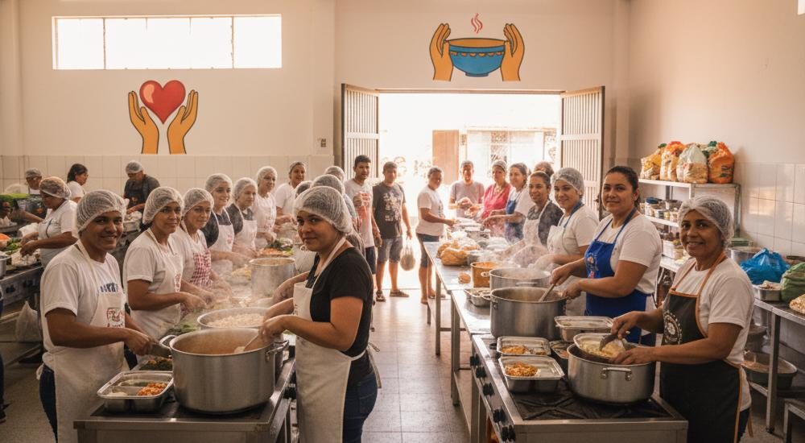

Cozinha Solidária: Combate à Fome com Dignidade
O projeto Cozinha Solidária é a nossa resposta direta e imediata ao desafio da fome e da insegurança alimentar nas comunidades. Acreditamos que o acesso a uma refeição nutritiva é um direito fundamental e um ato de dignidade.
Nossa operação de combate à fome se baseia em três pilares essenciais:
- Produção de Refeições Nutritivas: Preparamos diariamente alimentos frescos e balanceados, seguindo padrões de higiene e qualidade.
- Distribuição Estratégica: Levamos as refeições diretamente a pessoas em situação de rua e a famílias de baixa renda em pontos estratégicos.
- Fortalecimento Comunitário: Atuamos em parceria com líderes locais, garantindo que o auxílio chegue a quem mais precisa.
Cada prato distribuído é uma vida que é alimentada e uma esperança que é renovada. Apoie a Cozinha Solidária para garantir que ninguém durma com fome.
Quero Ajudar Agora Voltar